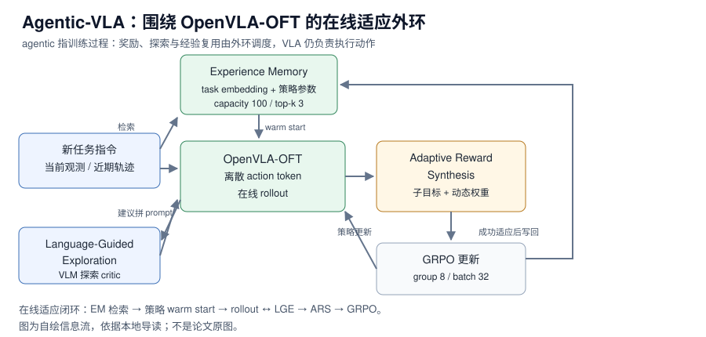

RT-X 论文精读：用 22 种机器人的数据换一个更强的单机策略
RT-X 重新分配的是“本体差异”的处理位置——不在每个机器人上各训一个策略，而是先把动作对齐到共享 7-DoF 空间，再用混合本体数据训练一个策略族。
训练范式2023
Agentic-VLA 重新分配的是“部署后如何继续学习”的接口——不再只靠人工补示教或固定奖励，而是让 Experience Memory、VLM 探索 critic 和语言模型奖励分解共同调度一次在线 RL 适应。【章节】
Agentic-VLA 不换 VLA 基座，而是在 OpenVLA-OFT 外面加一个训练期外环：Experience Memory 用相似任务权重做 warm start，Language-Guided Exploration 用 VLM 给探索建议，Adaptive Reward Synthesis 把长任务拆成子目标并动态调权重，最后用 GRPO 更新。本地章节转述的公开结果是 LIBERO 平均 97.8%（OpenVLA-OFT 89.2%、EVOLVE-VLA 95.8%），LIBERO-Long 98.1%（85.8% → 98.1%，+12.3）；1-shot 平均 70.5%；LIBERO-Long 到 90% 只需 700 iterations / 22.4k rollouts，约为 EVOLVE-VLA 的 2.4× 更快；RoboTwin 2.0 Easy/Hard 为 62.5%/34.7%。这些数字未在本机复测，benchmark 协议不同，不能合成一个平均分。
来源约定：本文事实只取自本仓库 Agentic-VLA 导读，没有用模型记忆补写论文细节。
标注约定：【论文】指本地章节转述的 arXiv 论文与附录；【章节】指本地章节自己的归纳；【未给】指章节没有提供。
版本：arXiv2605.22896v1，2026-05-21 提交；代码 commit 章节未给；查阅日期 2026-11-01。
| 资源 | 入口 | 状态 / 阅读用途 |
|---|---|---|
| 论文 | arXiv:2605.22896 / HTML / PDF | 方法、LIBERO/RoboTwin 结果、附录超参与失败分析 |
| 源码 | 章节未给 | 截至整理时未检索到官方 GitHub 仓库；不能按官方命令复现 |
| 权重 | 章节未给 | 实验从 OpenVLA-OFT 基座出发；章节没有给 Agentic-VLA 专用权重 |
| 项目页 | 章节未给 | 当前主要公开入口是 arXiv，暂未检索到官方独立项目页 |
| 数据集 | LIBERO、RoboTwin 2.0（公开基准；章节未给仓库链接） | 评测协议与任务设置见 §4 |
| 基础策略* | openvla/openvla | 公开入口未在本地章节核验；论文实验把方法应用到 OpenVLA-OFT |
论文题目：Agentic-VLA: Efficient Online Adaptation for Vision-Language-Action Models；作者：Ruofan Jin、Zaixi Zhang；arXiv：2605.22896v1；版本：2026-05-21；查阅日期：2026-11-01。
版本提示： 章节只覆盖 v1，没有旧版数字；全文统一使用该版本。* 行是章节外补充的公开入口，只用于定位基座，不代表论文官方资源。
一句话：Agentic-VLA 重新分配的是“部署后如何继续学习”的接口——不再只靠人工补示教或固定奖励，而是让 Experience Memory、VLM 探索 critic 和语言模型奖励分解共同调度一次在线 RL 适应。【章节】

图 1：Agentic-VLA 的在线适应信息流。自绘，依据本地导读；不是论文原图。
对比主流路径：一次性 SFT/BC → 部署 → 失败后重新采数据；Agentic-VLA 改成 SFT 基座 → 新任务 → 记忆检索 warm start → 在线 rollout → 语言引导探索 + 动态子目标奖励 → GRPO → 成功权重写回。
Agentic-VLA 的“结构”不是新的视觉编码器或动作头，而是围绕 VLA policy 的四个接口。章节没有给网络层数、隐藏维度、动作维度或 token 数，因此下面按模块职责而不是张量形状来读。
| 模块 | 输入 | 输出 | 在闭环中的时机 |
|---|---|---|---|
| OpenVLA-OFT policy | 视觉观测、proprioception、语言任务 | 离散 action token 序列 | 每次 rollout 执行动作 |
| Experience Memory | 新任务指令的 embedding | top-k 相似任务的策略参数与元数据 | rollout 前初始化 |
| Language-Guided Exploration | 当前 RGB、任务指令、近期轨迹 | 一句短探索建议 | 探索阶段拼进 prompt |
| Adaptive Reward Synthesis | 长任务指令、子目标、近期成功率 | 子目标级 reward 与动态权重 | 每次更新前 |
| GRPO | rollout 轨迹、reward | 策略参数更新 | 每轮训练 |
基础策略是 OpenVLA-OFT，输入仍是视觉观测、proprioception 和语言任务，输出是离散 action token 序列。章节明确说，Agentic-VLA 不是把 VLA 替换成一个 agent，而是在 VLA 交互过程中加入负责训练过程调度的 agent。【论文】
论文使用离散 action tokens 来适配 RL。章节没有给 action token 的码本大小、chunk 长度、动作维度或策略参数量；这些不能从“OpenVLA-OFT”这个名字反推。【未给】
ARS 做三件事。第一，用语言模型把长指令拆成子目标，例如把 “turn on the stove and put the moka pot on it” 拆成靠近炉灶、打开炉灶、找到 moka pot、抓取、放置五段。第二，为每个子目标维护近期成功率的指数滑动平均，用来判断当前训练卡在哪个阶段。第三，对已掌握的子目标降低 reward weight，对未掌握的子目标保持较高权重，形成 curriculum。【论文】
章节没有给 ARS 的 reward 公式、权重更新式或子目标判定阈值；本文不补。可确认的是它不是固定三步模板：任务分解质量实验里，不分解时 LIBERO-Long 为 91.3%，固定三步模板 93.8%，语言模型生成子目标 98.1%，人工 oracle 子目标 98.4%。【论文】
LGE 把 VLM 当成探索 critic，不直接输出机器人动作，而是看当前 RGB、任务指令和近期轨迹，生成一句短建议，例如“从左侧接近”“抓取点靠近中心”“降低动作幅度”。建议只在探索阶段拼接到任务 prompt 上；评测时策略仍用原始任务指令执行。【论文】
建议频率随训练进展下降：策略弱时建议更频繁，近期 reward 变高后降低频率，减少对 VLM 提示的过度依赖。章节没有给建议频率的具体衰减曲线、VLM 的调用成本或建议长度上限。【未给】
Experience Memory 保存三类信息：冻结语言编码器得到的 task embedding、该任务适应后的策略参数、成功率/训练迭代数/任务复杂度等 metadata。新任务先算 embedding，检索最相似的若干 entry，再用相似度加权得到初始化参数。论文使用 memory capacity 100、retrieval top-k 3、temperature 0.1。【论文】
章节专门解释了为什么权重平均在这里相对可行：所有策略都从同一个 OpenVLA-OFT 初始化；每个任务的在线适应是局部更新；检索很尖锐，只取语义最相关的少数任务；加权结果只作为 warm start，后续还会继续在线适应修正。因此它不是通用模型合并，而是同一基座上的 task-local 参数 warm-start heuristic。【章节】
边界是 memory interference：语义相似但操作要求不同的任务可能负迁移。章节举的例子是两个指令都提到 drawer / bowl，但一个要先打开抽屉，一个要绕开障碍。【论文】
闭环是：新任务指令 → EM 检索 → 初始化 OpenVLA-OFT → 环境 rollout → LGE 按需给建议 → ARS 生成子目标 reward → GRPO 更新 → 达到适应标准后写回 memory bank。论文附录给出的 group size 是 8，max rollout horizon 是 500，batch size 是 32。【论文】
这里的关键是训练过程 agentic，不是执行策略 agentic：VLA 执行动作时仍是 action policy；agentic 部分负责设计奖励、引导探索、复用经验。章节没有给 GRPO 的目标函数、KL 系数、clip 范围或优势估计细节。【未给】
协议：每个任务 50 条 expert demos，50 trials/task，5 seeds；四个 suite 为 Spatial、Object、Goal、Long。【论文】
| 方法 | Spatial | Object | Goal | Long | Avg |
|---|---|---|---|---|---|
| OpenVLA-OFT | 91.3 | 90.1 | 89.8 | 85.8 | 89.2 |
| EVOLVE-VLA | 95.4 | 97.4 | 95.8 | 94.4 | 95.8 |
| Agentic-VLA | 97.2 | 98.6 | 97.4 | 98.1 | 97.8 |
读法：提升在 Long 上最明显（85.8 → 98.1，+12.3），与方法设计一致：长时程任务更依赖子目标 reward、结构化探索和任务记忆。不能把这组数字与 1-shot、跨任务迁移或 RoboTwin 的数字直接横比，因为数据设置和任务集不同。
| 设置 | 对照基线 | EVOLVE-VLA | Agentic-VLA | 说明 |
|---|---|---|---|---|
| 1-shot 平均成功率 | OpenVLA-OFT 43.6 | 61.3 | 70.5 | 少示教条件下靠在线适应补数据 |
| LIBERO-Long → Object 迁移 | SFT direct 0.0 | 20.8 | 31.2 | 不提供目标任务示教 |
| Long 到 90% 的 iterations | 章节未给 | 1680 | 700 | SimpleVLA-RL 为 2450 |
| Long 到 90% 的 rollouts | 章节未给 | 53.8k | 22.4k | SimpleVLA-RL 为 78.4k |
跨任务迁移的读法：31.2% 离全监督还很远，但相对 0.0% 说明 online adaptation + memory + guided exploration 至少能在没有目标任务示教时找到一些可行策略。训练效率的 2.4× 是章节转述的论文说法，收益主要归因于 memory warm start、LGE 减少无效探索和 ARS 提供更密集信号。【论文】
协议：50 clean demos/task，100 rollouts/task，含 Easy / Hard domain randomization；Hard 加入 clutter、lighting、texture、table height 等随机化。代表性子集平均结果：Agentic-VLA Easy 62.5%、Hard 34.7%；RDT 为 34.5% / 13.7%，另一个基线为 46.4% / 16.3%。【论文】
这组结果说明方法不只适用于 LIBERO 单臂短任务；但章节没有给完整任务列表、每个任务的成功率和双臂同步细节，不能把它当成真实双臂部署证据。
章节展示了四类变化：milk-to-basket 任务里抓取 slip 后重新调整 gripper 的 error recovery；stove knob 被碰偏后根据新状态调整轨迹的 adaptive object handling；LGE 建议“从侧面接近”后学到的侧向抓取 novel strategy；drawer-and-bowl 任务里先开抽屉再抓碗的子任务顺序建议。这些是定性观察，不是受控指标。【论文】
来源：本地 Agentic-VLA 导读 §6–§10，转述 arXiv HTML 主表、低数据/迁移实验与质性图。
LIBERO-Long 上的累积消融：
| 配置 | 成功率 | Progress | Iters |
|---|---|---|---|
| OpenVLA-OFT SFT only | 85.8 | - | - |
| Vanilla RL binary reward | 87.7 | 0.04 | 2100 |
| Progress reward | 91.3 | 0.20 | 1850 |
| + ARS | 94.6 | 0.31 | 1200 |
| + LGE | 96.2 | 0.38 | 880 |
| + EM | 98.1 | 0.42 | 700 |
读法：二值 reward 只把成功率从 85.8 推到 87.7，说明稀疏奖励不够；progress reward 到 91.3，是基础但还不是全部；ARS、LGE、EM 是叠加收益，去掉任何一个都会掉。章节还做了 controlled comparison：固定三步、uniform weight、learning-progress sampling 都不如 ARS；RND、ICM 这类内在奖励探索不如 LGE；random retrieval 不如 task-similarity-based EM。这避免了“任意 curriculum / 任意 exploration bonus / 任意 warm start 都能涨”的质疑。【论文】
读者该不该复用：如果任务是长时程、可分解、需要语言 grounding，ARS + LGE 值得加；短任务或单阶段抓放，收益可能不足以抵消组件复杂度。章节没有给每个模块的单独增益、子目标数量、reward 权重范围或记忆容量的消融，本文不补。【未给】
来源：本地导读 §7，转述论文 LIBERO-Long 组件分析与 controlled comparison。
章节没有给模型延迟、推理显存、参数量、控制频率或重规划间隔，只给了训练算力与训练时长。因此不能从 4×A100 反推单次推理延迟，也不能用 1000 / 延迟 计算策略调用频率。
| 项目 | 章节给出的数值 | 口径 / 能说明什么 |
|---|---|---|
| 训练硬件 | 4 × NVIDIA A100 80GB | 论文实验配置，不是推理配置 |
| 单个 LIBERO suite 训练 | Agentic-VLA 约 8 小时 | 与 EVOLVE-VLA 19h、SimpleVLA-RL 32h 同节对比 |
| 推理延迟 | 章节未给 | 不能与训练时长混用 |
| 推理显存 | 章节未给 | 不能按 A100 80GB 推算部署门槛 |
| 策略参数量 | 章节未给 | 基座是 OpenVLA-OFT，但章节未给具体规模 |
| 控制频率 / 重规划间隔 | 章节未给 | 无法把 rollout horizon 500 换算成秒 |
测量时应分开记录：模型前向延迟、完整请求延迟（含图像预处理与通信）、单次 rollout 的环境步进时间、GRPO 更新时间和记忆检索时间。章节没有给这些分项，不能声称实时性。
来源：本地导读 §10。
| 训练项目 | 章节给出的值 | 备注 |
|---|---|---|
| 硬件 | 4 × NVIDIA A100 80GB | 论文实验 |
| 算法 | GRPO | 在线策略更新 |
| group size | 8 | 论文附录 |
| max rollout horizon | 500 | 论文附录 |
| batch size | 32 | 论文附录 |
| 优化器步数 | 章节未给 | 无法复现训练曲线 |
| 每卡 microbatch | 章节未给 | 无法计算有效 batch |
| 梯度累积 | 章节未给 | 无法计算有效 batch |
| 学习率 / warmup / EMA | 章节未给 | 无法复现优化配方 |
| 冻结模块 | 章节未给 | 无法确认哪些模块参与更新 |
| 任务分解模型 | Llama-3-8B | 用于 ARS 子目标拆解 |
| 探索 critic | Qwen3-VL-8B-Instruct | 用于 LGE 建议 |
| progress critic | VLAC | 用于 progress reward |
有效 batch 本应等于 GPU 数 × 每卡 microbatch × 梯度累积；这里无法计算，因为章节只给 batch size 32（未说明它是全局还是每卡），也没有 microbatch 和累积步数。不能按 4 卡直接推算训练时间：Agentic-VLA 8h、EVOLVE-VLA 19h、SimpleVLA-RL 32h 是同一节给出的单 suite 时长，但算法和 rollout 开销不同。
三级复现的可行性：理解与评测需要自备 OpenVLA-OFT、LIBERO/RoboTwin 和评测脚本；训练链路需要自己实现 progress critic、GRPO、ARS、LGE 和 EM，章节没有给可执行配方；完整训练需要 4×A100 级算力和完整组件，不能声称按章节可复现。
来源：本地 Agentic-VLA 导读的对应小节。
章节明确说没有官方代码，因此这里不是“读某个仓库”，而是“按模块顺序自建并对齐论文接口”。下表是按章节建议整理的实现顺序，不是官方文件路径。
| 顺序 | 复现层 | 阅读 / 实现重点 | 验收信号 |
|---|---|---|---|
| 1 | LIBERO + OpenVLA-OFT 基座 | 能 rollout，记录 observation、instruction、action tokens、success、progress、episode metadata | 基座在 LIBERO 上能稳定跑完一个 suite |
| 2 | progress reward baseline | 实现 progress critic 或接 VLAC 类奖励模型，跑通 GRPO | 不用 ARS/LGE/EM 也能更新，成功率高于 SFT |
| 3 | ARS | 任务分解、子目标进度评估、capability-aware reward weights | 子目标可判定，progress 与环境 success 不冲突 |
| 4 | LGE | 用本地 VLM 生成短建议，只在 exploration 阶段拼 prompt | 建议确实改变行为，而不只是增加推理开销 |
| 5 | EM | 写 task embedding、adapted params、成功率、迭代数 | 少量任务上 warm start 有加速且不出现明显负迁移 |
| 6 | RoboTwin 2.0 / 真机 | 动作空间、双臂同步、安全停止、domain randomization、reward definition | 先在 shadow mode 或离线 replay 验证，再上硬件 |
坑：没有官方仓库，任何“一键复现命令”都是假的；reward hacking 仍然存在，章节提到约 12% 的失败与 progress estimator 给高分但环境判定未成功有关；memory interference 会让相似任务互相拖累；组件多，不建议零基础直接复现。
章节没有给官方 checkpoint、官方训练命令或评测命令，因此本节不写假装可执行的命令，只给分层复现清单。下面的流程是设计伪代码，不是官方脚本。
新任务指令
-> EM 检索 top-3 相似任务
-> 用相似度加权参数初始化 OpenVLA-OFT
-> 在 LIBERO / RoboTwin 环境 rollout
-> 探索阶段按需拼接 LGE 建议
-> ARS 计算子目标 reward 与动态权重
-> GRPO 更新
-> 达到适应标准 ? 写回 EM : 继续 rollout没有官方源码可固定。需要自备 OpenVLA-OFT 基座、LIBERO / RoboTwin 2.0、GRPO 实现、progress critic（或 VLAC）、Llama-3-8B 任务分解、Qwen3-VL-8B-Instruct 探索 critic 和 experience memory。记录每个组件的版本与 commit，否则结果不可归因。
先确认基座能在 LIBERO 中完成一次 rollout，并记录 observation、instruction、action tokens、success、progress 和 episode metadata；再确认 progress critic 的输出与 episode 成功/失败对齐；最后确认 memory 的写入与读取不会串任务。章节没有给 dry-run 命令。
章节没有给学习率、microbatch、累积步数或优化器配置，不能给出可信的单卡配方。可做的教学调整是：先固定 batch size 32 的语义（全局或每卡），用单卡小 microbatch 加梯度累积保持有效 batch，再在日志中明确记录；这只是教学调整，不是论文配方。
不要从仿真直接切到真机在线更新。章节建议先做 shadow mode 或离线 replay，验证 perception、VLM 反馈、online update、progress reward 和 memory retrieval 在真实观测与安全约束下能稳定运行。
Agentic-VLA 的价值不是“又一个 VLA”，而是把在线 RL 里最难工程化的三个环节拆成可替换模块：奖励分解、探索引导、经验复用。
相关章节：Agentic-VLA 导读、PRTS、Dexbotic-RLinf、01 技术专题、02 论文与评测。